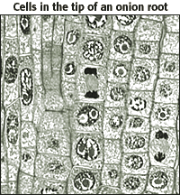
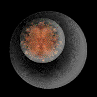

The Biology Project > Cell Biology > Intro to Onion Root Tips Activity > Activity
Online Onion Root Tips
Determining time spent in different phases of the cell cycle
| Growth in an organism is carefully controlled by regulating the cell cycle. In plants, the roots continue to grow as they search for water and nutrients. These regions of growth are good for studying the cell cycle because at any given time, you can find cells that are undergoing mitosis. | |
|
In order to examine cells in the tip of an onion root, a thin slice of the root is placed onto a microscope slide and stained so the chromosomes will be visible. The cells you'll be looking at in this activity were photographed with a light microsope and then digitized so you can see them on the computer. |
 |
| Although slicing the onion root captures many cells in different phases of the cell cycle, keep in mind that the cell cycle is a continuous process. Scientists have divided the process into 5 phases, each characterized by important events, but these divisions are still arbitrary. |  |
The Biology Project > Cell Biology > Intro to Onion Root Tips Activity > Activity
The University of Arizona
Revised: April 2004
Revised: August 2004
Contact the Development Team
http://biology.arizona.edu
All contents copyright © 1997-2004. All rights reserved.